05:00
Getting Started
EMSE 6035: Marketing Analytics for Design Decisions
John Paul Helveston
August 26, 2026
Week 1: Getting Started
1. Course orientation
2. Intro to conjoint analysis
3. Introductions
4. Getting started with R & Positron
Week 1: Getting Started
1. Course orientation
2. Intro to conjoint analysis
3. Introductions
4. Getting started with R & Positron
Meet your instructor!

John Helveston, Ph.D.
- 2025 - Present: Associate Professor, EMSE
- 2018 - 2025: Assistant Professor, EMSE
- 2016-2018: Postdoc at Institute for Sustainable Energy, Boston University
- 2016: PhD in Engineering & Public Policy at Carnegie Mellon University
- 2015: MS in Engineering & Public Policy at Carnegie Mellon University
- 2010: BS in Engineering Science & Mechanics at Virginia Tech
- Website: www.jhelvy.com
Tools
Course website: https://madd.seas.gwu.edu/2026-Fall/
Course slack: https://emse-madd-f26.slack.com
& Positron: Course Software Page
Why ?
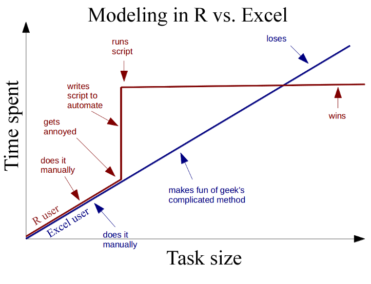
Wait, why aren’t we using Python?
The Marketing field out of Statistics, not Machine Learning
- Python is a general purpose language developed by Guido van Rossum, a computer scientist.
- Unlike R, Python was not originally developed for data analysis.
- Both languages are extremely useful, and you should probably learn python too.

Learning Objectives
After this class, you will know how to…
…work with data in
…design effective surveys to get rich data
…analyze consumer choice data to model consumer preferences
…effectively communicate insights
Course prerequisites
This course requires prior exposure to:
Probability theory
Multivariable calculus
Linear algebra
Regression
Not sure?
Take this self assessment
Weekly HW (30% of grade)
Do some readings, recorded lectures, practice problems
Write a short reflection
~Every week (13 total)
Due 11:59pm Monday before class
Graded for completion (looking for engagement)
Quizzes (10% of grade)
At the start of class every other week-ish. Make ups only for excused absences (i.e. don’t be late).
6 total, lowest dropped
10 minutes
Why quiz at all? The “retrieval effect” - basically, you have to practice remembering things, otherwise your brain won’t remember them (see the book “Make It Stick: The Science of Successful Learning”)
Exam (10% of grade)
In-person, first 45 minutes of class on 12/2
All hand-written (like a long quiz)
Semester Project (45% of grade)
Teams of 3-4 students
Goals:
- Assess market viability of a new technology or design
- Recommend best design choices for target market or application
Key deliverables:
| Item | Weight | Due |
|---|---|---|
| Project Proposal | 5 % | Sep. 21 |
| Survey Plan | 5 % | Sep. 30 |
| Pilot Survey | 5 % | Oct. 14 |
| Pilot Analysis | 5 % | Nov. 02 |
| Final Survey | 5 % | Nov. 16 |
| Final Analysis Report | 15 % | Dec. 07 |
| Final Presentation | 5 % | Dec. 09 |
Grades

Grades
| Item | Weight | Notes |
|---|---|---|
| Participation / Attendance | 5% | (Yes, I take attendance) |
| Homework | 30 % | 13 assignments (12 x 2.5%, lowest dropped) |
| Quizzes | 10 % | 6 quizzes, lowest dropped |
| Final Exam | 10 % | In class, closed book (12/2) |
| Project Proposal | 5 % | Teams of 3-4 students |
| Survey Plan | 5 % | |
| Pilot Survey | 5 % | |
| Pilot Analysis | 5 % | |
| Final Survey | 5 % | |
| Final Analysis Report | 15 % | |
| Final Presentation | 5 % |
Course policies
BE NICE
BE HONEST
DON’T CHEAT
Copying is good, stealing is bad
“Plagiarism is trying to pass someone else’s work off as your own. Copying is about reverse-engineering.”
– Austin Kleon, from Steal Like An Artist
Use of AI
We will heavily use AI tools this semester
- Large language models (LLMs) are pretty good
- Sometimes they suck.
- I will grade whatever you submit. It should not suck.
Ways to not have your work suck:
- Don’t submit code that doesn’t run (actually run it before submitting it).
- Actually read what the AI generates, and don’t submit something you don’t understand. (Ask the LLM to explain why something works or doesn’t work)
Use the approach I teach: agentic workflows (starting next week)
Late submissions
- 3 late days - use them anytime, no questions asked
- No more than 2 late days on any one assignment
- Contact me for special cases
How to succeed in this class
Participate during class!
Start assignments early and read carefully!
Get sleep and take breaks often!
Ask for help!
Getting Help
Use Slack to ask questions.
Schedule a meeting w/Prof. Helveston:
- Mondays from 8:00-4:30pm
- Tuesdays from 8:00-4:30pm
- Fridays from 8:00-4:00pm
Week 1: Getting Started
1. Course orientation
2. Intro to conjoint analysis
3. Introductions
4. Getting started with R & Positron
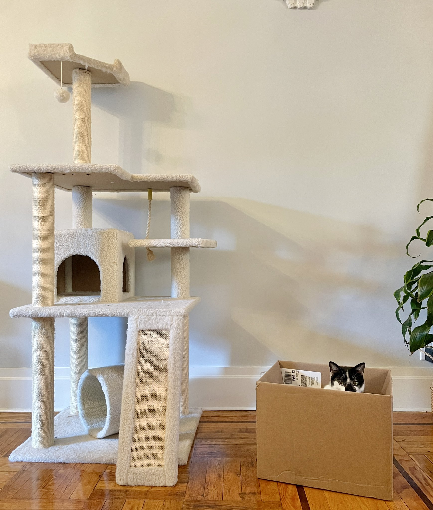
Engineers often design things nobody wants!
We want to answers to questions like…
- Higher prices decrease demand, but by how much?
- How much more is a consumer willing to pay for increased performance in X?
- How will my product compete against competitors in the market?
Answers depend on knowing what people want
Directly asking people what they want isn’t always helpful
(People want everything)
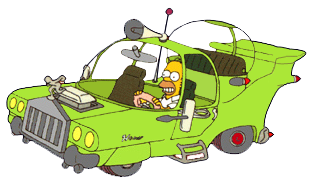
Which feature do you care more about?
Battery Life?
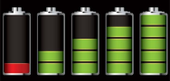
Brand?
Signal quality?
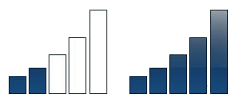
Conjoint approach:
Use consumer choice data to model preferences
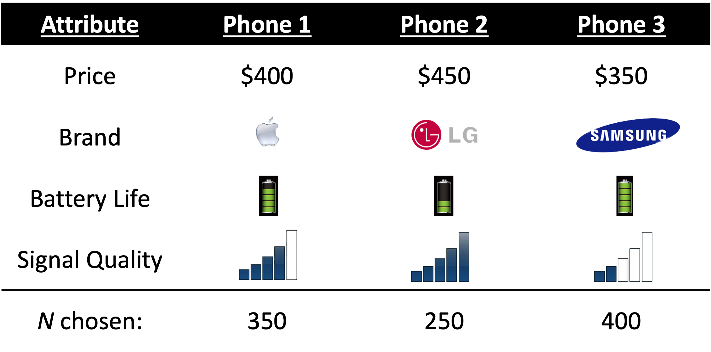
Use random utility framework to predict probability of choosing phone j
1. \(u_j = \beta_1\mathrm{price}_j + \beta_2\mathrm{brand}_j + \beta_3\mathrm{battery}_j + \beta_4\mathrm{signal}_j + \varepsilon_j\)
2. Assume \(\varepsilon_j \sim\) iid extreme value
3. Probability of choosing phone j: \(P_j = \frac{e^{\beta'x_j}}{\sum_k^J e^{\beta'x_k}}\)
4. Estimate \(\beta_1\), \(\beta_2\), \(\beta_3\), \(\beta_4\) by minimizing \(-L = - \sum_n^N \sum_j^J y_{nj} \ln P_{nj}\)
Willingness to Pay
\(u_j = \beta'x_j + \alpha p_j + \varepsilon_j\)
\(\omega = \frac{\beta}{-\alpha}\)
Respondents on average are willing to pay $XX to improve battery life by XX%
Make predictions
\(P_j = \frac{e^{\hat{\beta}'x_j}}{\sum_k^J e^{\hat{\beta}'x_k}}\)
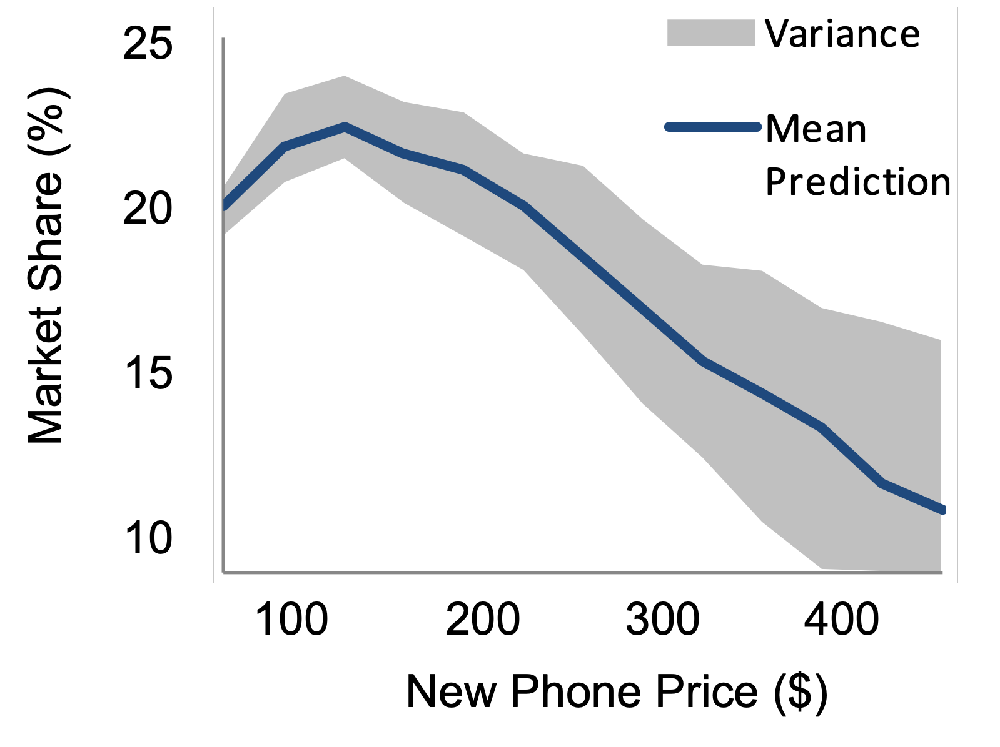
Example: Pocket Charge
A Flexible, Portable Solar Charger
Example survey choice question
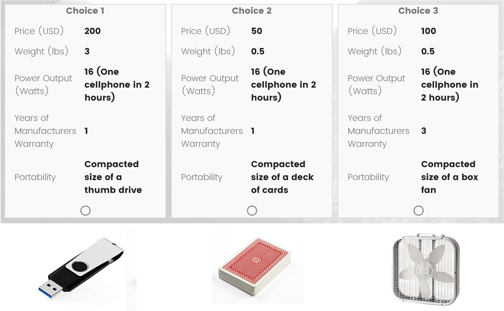
Your project starts now!
Click here to view projects
Week 1: Getting Started
1. Course orientation
2. Intro to conjoint analysis
3. Introductions
4. Getting started with R & Positron
Introduce yourself
- Preferred name
- Degree program
- Prior experience
- What do you hope to gain from this class?
- Project interests?
Break
If you haven’t already, install everything on the software page
Add your GitHub username to this sheet (you need this to get your course repo!)
Stand up, meet each other, (maybe form teams?…use this sheet)
Week 1: Getting Started
1. Course orientation
2. Intro to conjoint analysis
3. Introductions
4. Getting started with R & Positron
This semester we use Positron
(not RStudio)
Positron Orientation
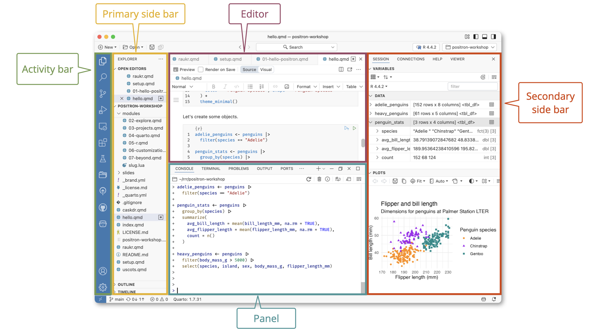
Open intro-to-R.R file and follow along
Staying organized
1) Save your code in .R files
2) Keep all related work in folders
3) Always open your folder from Positron
10:00
Your turn
A. Practice getting organized
- Make a new folder called
week1, then open it in Positron (File > Open Folder…). - Create a new R script and save it as
practice.R. - Open the
practice.Rfile and write your answers to these questions in it.
B. Creating & working with objects
1). Create objects to store the values in this table:
| City | Area (sq. mi.) | Population (thousands) |
|---|---|---|
| San Francisco, CA | 47 | 884 |
| Chicago, IL | 228 | 2,716 |
| Washington, DC | 61 | 694 |
- Using the objects you created, answer the following questions:
- Which city has the highest density?
- How many more people would need to live in DC for it to have the same population density as San Francisco?
>20,000 packages on the CRAN
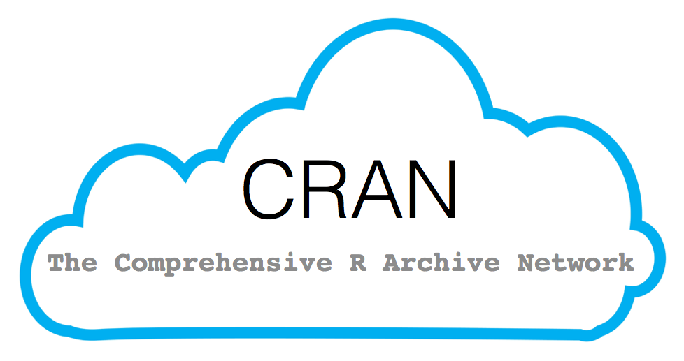
Installing packages
install.packages("packagename")
(The package name must be in quotes)
You only need to install a package once!
Loading packages
library(packagename): Loads all the functions in a package
(The package name doesn’t need to be in quotes)
You need to load the package every time you use it!
Installing vs. Loading
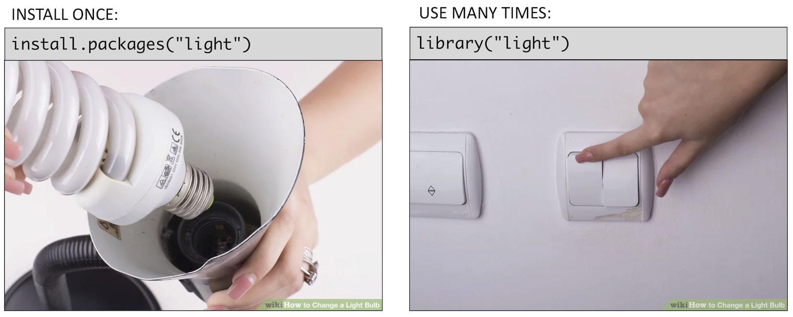
Example: wikifacts
Install the Wikifacts package, by Keith McNulty:
Example: wikifacts
Now, restart your R session in Positron: > Session -> Restart R
Using only some package functions
You don’t always have to load the whole library.
Functions can be accessed with this pattern:
packagename::functionname()